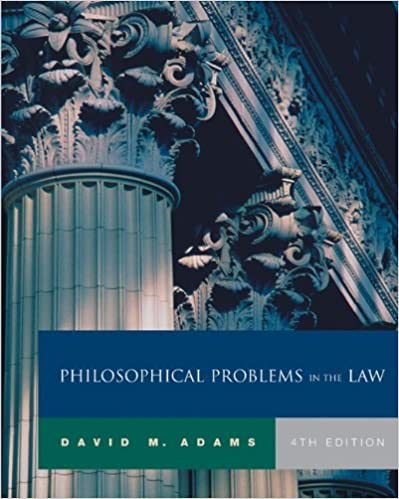
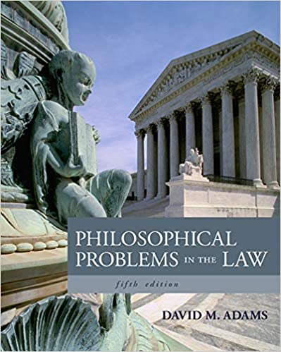
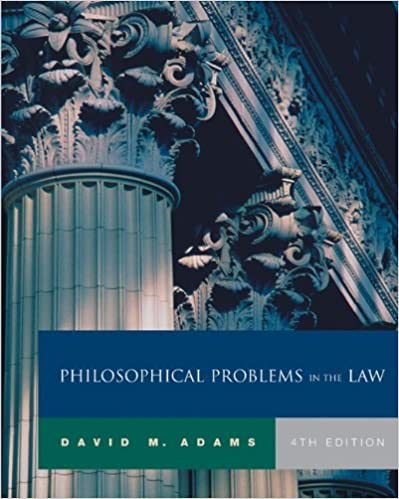
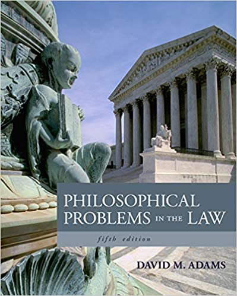

| This
syllabus, the assignments, and other aspects of
the course are all subject to revision as we go,
as needed. After all, we're still in a pandemic. |
Contents
Contact
Information
Course goals
Texts
Assignments & grading
reading responses instructions
Course policies
Important dates
Course goals
Texts
Assignments & grading
reading responses instructions
Course policies
COVID-19
Attendance
Distractions
Late work
Academic integrity
Grades
Disability accommodations
Remote learning
How to succeed in this courseAttendance
Distractions
Late work
Academic integrity
Grades
Disability accommodations
Remote learning
Important dates
Your host: Jeremy Anderson
E-mail: jeremyanderson@depauw.edu
Web: http://jeremyanderson.net
Phone: from campus, ext. 4679. From off campus, 765-658-4679.
Office:
Web: http://jeremyanderson.net
Phone: from campus, ext. 4679. From off campus, 765-658-4679.
Office:
Virtual (safer! more convenient!): here on
Google Meet; let me know if you'll be dropping in.
Physical: Asbury 209. Please wear a mask in my office.
Hours: My office hours are MWF 9:00 - 10:10AM; other times by appointment. (Times are Eastern Daylight Time (UTC-4:00) until November 6, when we switch to Eastern Standard Daylight Time (UTC-5:00).)
Physical: Asbury 209. Please wear a mask in my office.
Hours: My office hours are MWF 9:00 - 10:10AM; other times by appointment. (Times are Eastern Daylight Time (UTC-4:00) until November 6, when we switch to Eastern Standard Daylight Time (UTC-5:00).)
Course goals
Through reading and
discussing the assigned texts, we will critically examine
some of the many philosophical issues arising in the law,
such as the proper application of law, the nature and
basis of law, how law may be interpreted, whether law
should protect us from ourselves or enforce morality, how
punishment is justified, and others of your choice. We
will read essays on these topics and examine legal
rulings. By the end you should:
- Have a basic understanding of the structure of the US legal system and of dominant ethical theories relevant to legal thinking
- Enhance your knowledge of important terms and sharpen your ability to identify and evaluate philosophical arguments
- Understand important points of view on the issues we discuss
- Critically reflect on the above
- Appreciate the complexity of these issues and be able to take a reasoned stand on them
- Enhance your skills at research, writing, and speaking
- Demonstrate the above in assignments and discussion
Texts
Our textbook will be Philosophical Problems in
the Law, edited by David M. Adams. You may use
either the 5th edition (ISBN 9781133049999) or the 4th
edition (ISBN 9780534584283). Both are pictured here.

Copies should be available at Eli's Books but you can find them much cheaper online. Used copies of the 4th edition will be cheapest and will work fine. Other readings will be linked from our assignments page, placed on reserve in Roy O. West Library, or handed out/emailed as needed.
You will need a copy of the Constitution of the United States for your reference. Free copies are easily available on the web, and I have posted links to some on our reading assignments page.

Copies should be available at Eli's Books but you can find them much cheaper online. Used copies of the 4th edition will be cheapest and will work fine. Other readings will be linked from our assignments page, placed on reserve in Roy O. West Library, or handed out/emailed as needed.
You will need a copy of the Constitution of the United States for your reference. Free copies are easily available on the web, and I have posted links to some on our reading assignments page.
Assignments & grading
Various terms, ideas,
arguments, theories, etc. will come up in readings,
lectures, presentations, and discussion. As you might
expect, your grade will depend on how well you show that
you understand and have thought about that material. Where
independent research is required, your grade will also
depend on the quality of that research and demonstrating
that you understand and have thought about that material.
Though it has no specific prerequisites this is a
300-level course so my expectations for the quality of
your work will be higher than in 100- or 200-level
courses. (First-year students should find another course
immediately.) The course grade will be derived as follows:
Speaking & listening
Writing
Speaking & listening:
Writing:
5%
Class participation
5% Co-leading discussion
20% Presentation
5% Co-leading discussion
20% Presentation
Writing:
10% Reading responses (at
least one each week)
15% Two short papers @ ~1200-1500 words each
20% Research paper @ ~3000-4000 words (can count towards Writing In the Major)
10% Early exam
15% Take-home final exam
15% Two short papers @ ~1200-1500 words each
20% Research paper @ ~3000-4000 words (can count towards Writing In the Major)
10% Early exam
15% Take-home final exam
Speaking & listening
Class participation is showing you’re
thinking about the course in some way besides the other
assignments. The best way is participating in class
discussions. You could also discuss course-related
things with me outside of class in person or by e-mail,
etc. Participating once per week, by whatever means,
will earn you a C for participation; more will earn a
higher grade.
Co-leading class discussion will ask you to (a) study an assigned reading carefully, (b) prepare some questions for the class about important points in that reading, and (c) co-lead class discussion with me on that assignment. You'll need to do this at least once if the class is large, and at least twice if the class is small. Sign up to co-lead on Moodle starting in the first week of class.
The presentation will entail you forming small groups of 2 or 3 if the class is large, or working alone or in pairs if the class is small. More details are on the presentations page, but here’s a quick description. Each individual/group will take responsibility for researching a topic within the philosophy of law and presenting it to the class. Your presentations are part of the course (their contents will be fair game for the final exam, for example), so they need to be done well, and I will help you do well. I can suggest presentation topics, but it's best if you choose what interests you.
Co-leading class discussion will ask you to (a) study an assigned reading carefully, (b) prepare some questions for the class about important points in that reading, and (c) co-lead class discussion with me on that assignment. You'll need to do this at least once if the class is large, and at least twice if the class is small. Sign up to co-lead on Moodle starting in the first week of class.
The presentation will entail you forming small groups of 2 or 3 if the class is large, or working alone or in pairs if the class is small. More details are on the presentations page, but here’s a quick description. Each individual/group will take responsibility for researching a topic within the philosophy of law and presenting it to the class. Your presentations are part of the course (their contents will be fair game for the final exam, for example), so they need to be done well, and I will help you do well. I can suggest presentation topics, but it's best if you choose what interests you.
Writing
Reading responses: These are to get you
thinking about and discussing our readings before class.
At least once
each week, write a response of at least 250 words to at least one of
the readings for an upcoming class, and post it to that
week's Moodle forum.
Reading responses are scored credit/no credit. To get credit:
Two short papers of about 1200 to 1500 words each will be required. Each will ask you to take a position on something we have studied. I can suggest topics for you but I recommend you choose your own. More details are available on the Papers web page.
For your research paper you will research some problem in the philosophy of law, take a stand on that problem, and defend your view against serious opposition. The research must be substantial. Your topic may be related to that of your presentation or a short paper. You will develop the paper in stages: first a short proposal for feedback, then a draft for more feedback before turning in the final version. Full instructions are on the Papers web page.
Exams will ask you to demonstrate understanding of class materials by applying them to difficult cases. For the first exam, those cases will be posted in advance. The final exam will be take-home and you will have several days to work on it.
Reading responses are scored credit/no credit. To get credit:
- Identify the two or three main points the author tries to make. Your goals here are to practice briefly explaining the big picture and to show you have done the reading. I encourage you to make this part short--just a few sentences.
- In a separate paragraph or more, give your reaction—positive, negative, neutral, tangential, whatever—to the reading(s). Your reaction should be detailed enough for the class and me to understand why you react to the reading(s) the way you do.
- Write decently and with integrity. I don't expect polished poetry here. But fix your grammar, spelling, and punctuation. Cite any sources you use and put others' words in quotation marks per the academic integrity requirements. Responses that are too sloppy won't get credit, and integrity lapses could be charged as dishonesty.
- Be on time. Responses are due one hour before our class meeting time. So, for example, if People v. Dlugash is assigned for Friday, your response to that reading is due by Friday by 9:20am. (Suggestion: turn them in the evening before class, because rushing at the last minute could result in poor work which would not get credit.)
To earn a B (85%), do
one passing reading response per week. To earn an A+
(100%), then turn in at least one response each week
(passing or not), with a total of 16 passing responses
during the semester.
Two short papers of about 1200 to 1500 words each will be required. Each will ask you to take a position on something we have studied. I can suggest topics for you but I recommend you choose your own. More details are available on the Papers web page.
For your research paper you will research some problem in the philosophy of law, take a stand on that problem, and defend your view against serious opposition. The research must be substantial. Your topic may be related to that of your presentation or a short paper. You will develop the paper in stages: first a short proposal for feedback, then a draft for more feedback before turning in the final version. Full instructions are on the Papers web page.
Exams will ask you to demonstrate understanding of class materials by applying them to difficult cases. For the first exam, those cases will be posted in advance. The final exam will be take-home and you will have several days to work on it.
Course policies
If any of these policies might be a problem for
you, please let me know and let's discuss it.
COVID-19 policies
Minimize distractions
Late work
Academic integrity
Letter grades and numerical scores will be related as follows:
If you take the course Pass/Fail:
I assign letter grades using the criteria stated in the University Catalog’s section on Academic Policies. There is no grading curve.
Disability accommodations
If we need to hold class remotely, these will be the privacy policies:
COVID-19 policies
The COVID-19 pandemic has
not gone away, and monkey pox may soon reach us, and our
safety is vital. The changing nature of the pandemic
means that safety measures may change as we go. Please
refer to DePauw's
guidelines.
Attendance Be in class on time and
prepared to discuss the day's assignment unless you have
strong reason not to be. Covid
symptoms are a strong reason (see above). I will
check attendance out of concern for you, but I will not
lower your course grade merely for missing class. (If
you miss much class you will lower your own grade.) If
you cannot make it to class, please let me know if
possible.
Here are three special
situations:
- Academically approved (by the VPAA) extracurricular activities, such as athletics: please inform me of possible conflicts at the beginning of the semester or as early as possible. I'm generally willing to work with you, but be aware your extracurriculars do not automatically let you miss class, make up a missed exam, or get an extended assignment deadline. You must ask faculty for permission, and we can say "No." Read the policy here.
- Religious
obligations: I support and follow DePauw's
policy on religious holy days. If your
religious obligations conflict with class meetings
or deadlines in this course, let me know at least
one week in advance. Then (a) you are excused from
attending those meetings and (b) I will work with
you to make up any work you miss.

- Excessive absences: per the Academic Handbook, you may have to drop the course if you miss two weeks of class (six meetings) regardless of why you are absent.
Minimize distractions
Be here both physically
and mentally as much as you can and help others do the
same. Please set your cell phone, smart watch, PDA,
pager, etc. to vibrate only, and put them aside during
class. Laptops or other tech may only be used for class,
and if your usage seems to be a distraction to yourself
or others I may ask you to put it away.
Late work
Make-up exams will not be
allowed nor work accepted for full credit except in
cases where there is a compelling excuse such as a
serious medical problem, University-recognized event,
religious obligation, etc. (See Attendance policy,
above.) Notify me in advance by phone (765-658-4679),
e-mail, or in person, if you can. I may require
documentation.
Academic integrity
We learn from others. I
expect ideas and words from other people -- readings,
classmates, me, research you do, etc. -- to show up in
your work. But we must acknowledge everyone who helped
us. Whenever others' words or ideas appear in your work,
you must cite them whether you quote them or not.
I take academic integrity
very seriously and I expect you to. Often, cheating is
unintended, but even then it is a serious offense and I
may charge you with misconduct. The minimum penalty is
usually worse than turning in no work at all, and
penalties can include failing the course, suspension, or
expulsion. Much plagiarism is due to ignorance of the
standards for documenting sources, so I urge you to:
- Ask me any questions you have about academic integrity, preferably before you turn in your work.
- Follow the academic integrity instructions for writing in this course.
- Get to know DePauw's policy and your obligations and rights, which are stated in the Academic Handbook.
- Use these resources to better understand academic integrity at DePauw.
You can avoid many integrity problems if you
follow these simple rules: if you use an idea you got
from someone or somewhere else, cite it; if you use
their words, put them in quotes and cite.
Letter grades and numerical scores will be related as follows:
| 100% = A+ | 87 - 89% = B+ | 77 - 79% = C+ | 67 - 69% = D+ | |
| 93 - 99% = A | 83 - 86% = B | 73 - 76% = C | 63- 66% = D | 59% or less = F |
| 90 - 92% = A- | 80 - 82% = B- | 70 - 72% = C- | 60 - 62% = D- |
If you take the course Pass/Fail:
| 70% - 100% = Pass | 60% - 69% = D | 59% or less = F |
I assign letter grades using the criteria stated in the University Catalog’s section on Academic Policies. There is no grading curve.
Disability accommodations
DePauw and I are committed
to providing reasonable accommodations to students with
properly documented disabilities--psychiatric,
attentional, learning, vision, hearing, physical,
medical, etc. If you believe you may need an
accommodation because of a disability or learning
challenge, please contact Student
Accessibility Services to learn how to receive
accommodations and support. You must contact them; I
cannot do it for you. Student Accessibility Services'
phone number is 765-658-6267, their email is studentaccessibility@depauw.edu.
Please contact them at least one week in advance to
ensure enough time for accommodations to be made.
Otherwise, there is no guarantee they can be provided
when you need them. I cannot provide accommodations
until I receive an official ADA letter detailing the
accommodations you may have. Once I receive it, you must
discuss with me how to accommodate you in this course.
Accommodations are not retroactive.
If we need to hold class remotely, these will be the privacy policies:
To enable class
interaction, class will be taught synchronously if
possible, meeting via video conference during the hours
in the schedule of classes. This means we will be
virtually visiting people's living spaces. Class
meetings will be recorded to serve as a learning
resource for the class. To respect your classmates, me,
and those you live with:
- Do not share those recordings or any portion of them outside the class.
- Keep your camera on. (If this won't work for you,
please see me to talk about it.)
- There are advantages to having cameras on. Having faces visible enables lip-reading and interpreting facial expressions, which help us better understand each other.
- You can prevent others from seeing your living space by using a background image or blurred background.
- Mind what your camera shows to others. For example, liquor bottles visible in an underage student's dorm room could be a problem. So could racist or otherwise offensive posters or paraphernalia in the background. Let's avoid that. Be mindful of DePauw's community standards and electronic communications policies.
How to succeed in this course
Read the assignments, and read carefully.
Make time, in a quiet space, to read. Not just once, not quickly like it’s a news article, but deeply. Turn off your TV, phone, radio, MP3. When reading online, close all other windows, set Skype to offline, turn off chats, and release yourself from Facebook etc. Philosophical texts reward focused, careful, and repeated reading. Besides, you can expect me to call on you with questions about it, and grasping the readings is helpful for doing well on exams and papers.
Some good ways to help yourself prepare are
Participate a lot. Some students assume their questions aren't worth asking or their comments not worth making, but often others wanted to say the same thing. Don’t allow yourself to stay confused or lost. If you are not comfortable speaking in class, see me outside it.
If you miss class, make arrangements with others to share notes with you. I suggest agreeing with at least two other people in the class, at the beginning of the semester, to share notes. If class is taught remotely, watch the recordings.
Give yourself time to write good papers. Haste never makes for better writing. Allow time to seek help at the W center and from me well before your paper is due.
Get enough sleep. If that means you cut back on extracurricular activities, so be it, because:
Seek help when you need it, or when you think you might need it, or just because. You do not need an appointment to drop in, though we can make one if you like.
Reading is an act of
contemplation, perhaps the only act in which we allow
ourselves to merge with the consciousness of another
human being. We possess the books we read, animating the
waiting stillness of their language, but they possess us
also, filling us with thoughts and observations, asking
us to make them part of ourselves.... In order for this
to work, however, we need a certain type of silence, an
ability to filter out the noise.
David L. Ulin, “The Lost
Art of Reading,” Los Angeles Times,
8/9/2009
Make time, in a quiet space, to read. Not just once, not quickly like it’s a news article, but deeply. Turn off your TV, phone, radio, MP3. When reading online, close all other windows, set Skype to offline, turn off chats, and release yourself from Facebook etc. Philosophical texts reward focused, careful, and repeated reading. Besides, you can expect me to call on you with questions about it, and grasping the readings is helpful for doing well on exams and papers.
Some good ways to help yourself prepare are
- Read the introductory material for each chapter and section in your textbook as we go
- Try to answer some of the relevant study questions in your textbook after each reading
- Write more reading responses than required
- Bring the current reading and your notes and reading responses with you to class
Participate a lot. Some students assume their questions aren't worth asking or their comments not worth making, but often others wanted to say the same thing. Don’t allow yourself to stay confused or lost. If you are not comfortable speaking in class, see me outside it.
If you miss class, make arrangements with others to share notes with you. I suggest agreeing with at least two other people in the class, at the beginning of the semester, to share notes. If class is taught remotely, watch the recordings.
Give yourself time to write good papers. Haste never makes for better writing. Allow time to seek help at the W center and from me well before your paper is due.
Get enough sleep. If that means you cut back on extracurricular activities, so be it, because:
Studies have shown that
sleep quantity and sleep quality equal or outrank such
popular campus concerns as alcohol and drug use in
predicting student grades and a student’s chances of
graduating.
Jane E.
Brody, "An Underappreciated Key to College Success:
Sleep," New York Times,
8/13/2018
Seek help when you need it, or when you think you might need it, or just because. You do not need an appointment to drop in, though we can make one if you like.
Important dates
Official dates to be aware
of are listed on DePauw's
academic calendar.
Assignments, deadlines, etc. are here on the class schedule Google doc.
Assignments, deadlines, etc. are here on the class schedule Google doc.